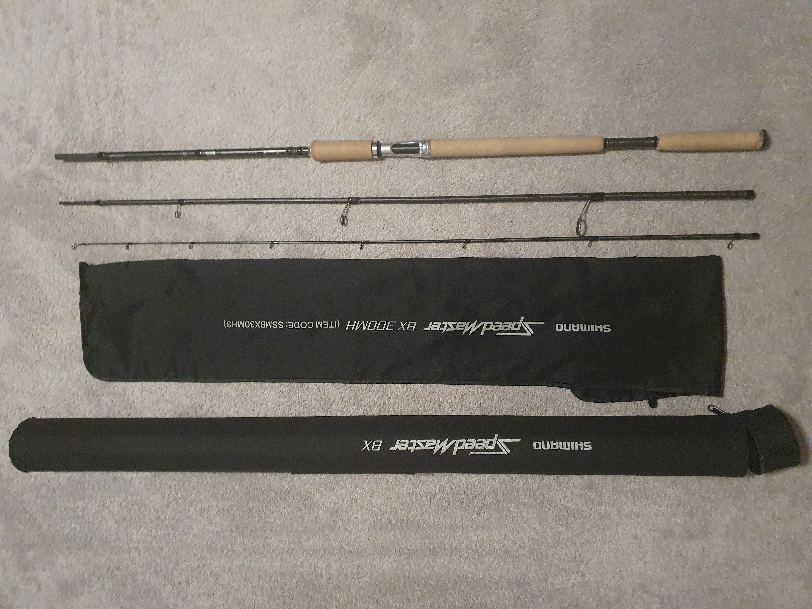
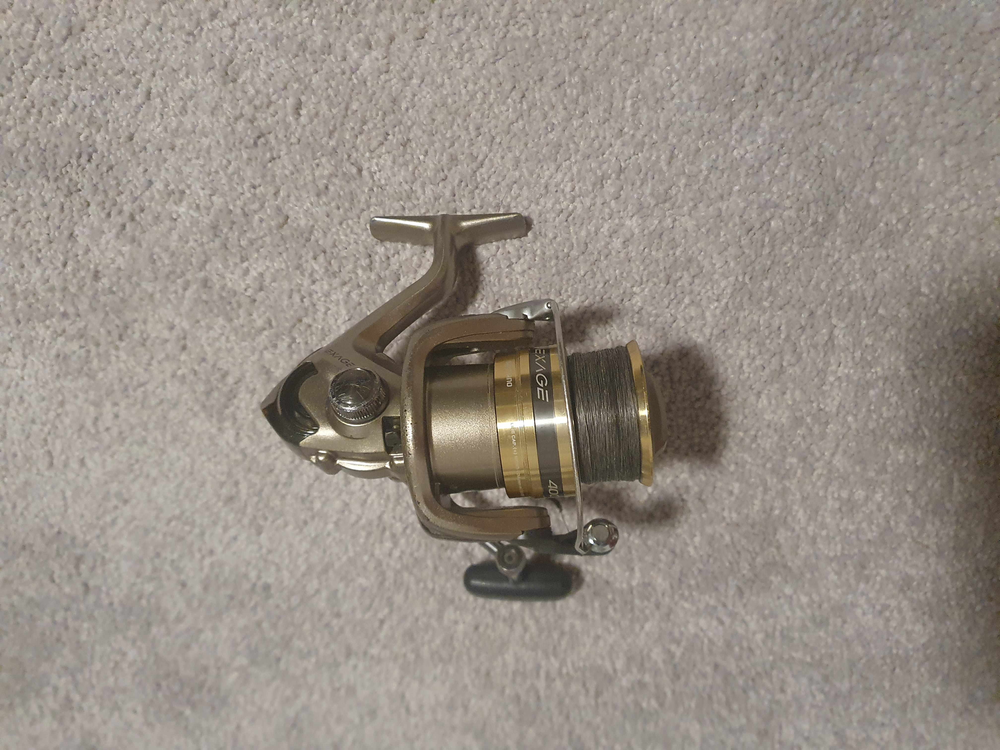
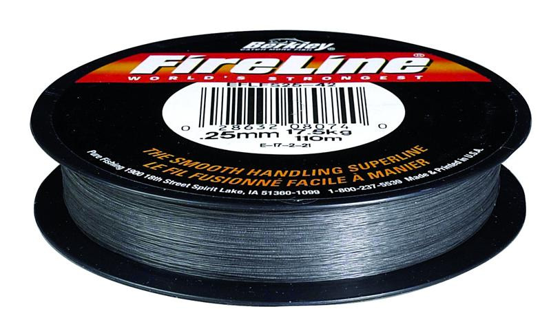
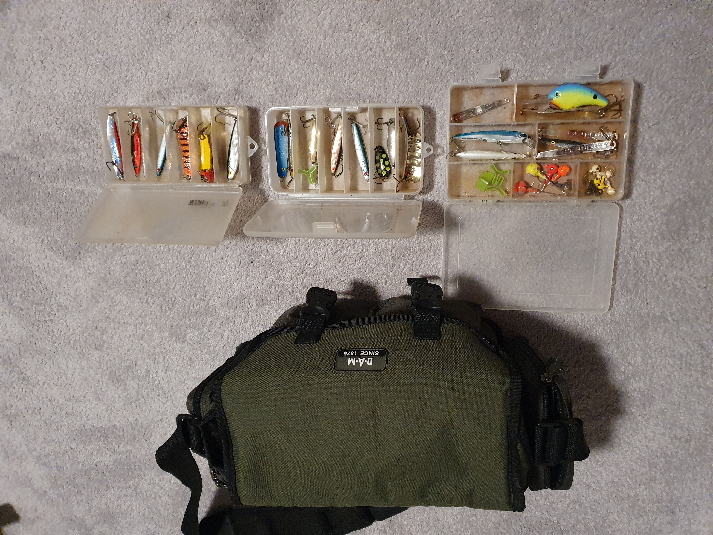
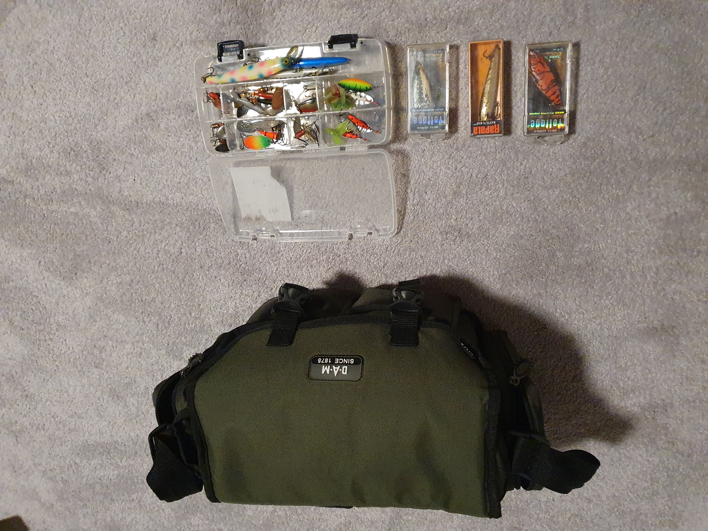

Velkommen

Om meg
Hei!
Jeg heter Anders Erichsen og er en ivrig sportsfisker.
Er en stangfisker som liker å fiske i saltvann og ferskvann, helst fra land. I saltvann er jeg alltid på jakt etter ørret, i ferskvann også ørret eller røye
Veldig gøy å fiske med mark og dupp sammen med barna mine, blir ikke store fiskene. Men gleden er stor når mine barn får sin egen fisk på kroken.
Noe av utstyret jeg bruker
Her er noe av utstyret jeg bruker å ha meg med på tur
| Nummer | Navn | Beskrivelse | Info | Bilde |
|---|---|---|---|---|
| 1 | Fiskestang | En god stang er ett viktig verktøy | Shimano Speedmaster BX |  |
| 2 | Snelle | En god snelle som en er komfortabel med | Shimano Exage 4000FD |  |
| 3 | Sene | En god sene som er lett og sterk. Jeg liker Fireline | Fireline .25mm smoke |  |
| 4 | Saltvann | Mye sluker i forskjellige farger og størrelser. En kommer til å sette seg fast | Sluker |  |
| 5 | Ferskvann | Enda flere sluker og kanskje en dupp for sikkerhetsskyld! | Sluker |  |
Fisk som er tatt bilde av
Dette er noen av fiskene som er fanget på stang fra båt og land
Torsk
Torsk fanget på stang, fra båt i Trondheimsfjorden

Makrell
En liten makrell fanget fra Gullberget i Trondheimsfjorden. Brukt en stingsild 18g blå/grønn og sølv.

Sei
En veldig liten sei fanget fra land. Bet på stingsild 12g blå med svarte prikker, rosa underdel og sølv.
Barracuda
Barracuda og en ukjent dyphavsfisk tatt på stang, fra båt utenfor Koh Chang.

Mort
En fin mort tatt med dupp og mark.

Gjedde
En ung gjedde som angrep sluken som svømte langs med sivet.

Knorr
En liten knorr som biter på hva som helst av sluk!
Tunfisk
Tunfisk fisket fra båt utenfor Phuket.
Steder som jeg har fisket
Her er det noen bilder av steder jeg har fisket og hatt gode opplevelser fra

Homburgsund

Torshavn
Koh Kood

Slegga, Trondheimsfjorden
Koh Samui (Gir meg ikke med å fiske bare fordi det blåser litt)
Tørbergsjøen, Trysil
Ørsjøen, Trysil
Video fra steder jeg har fisket
Kom i kontakt med meg
Det blir ikke så lett, men du kan gjerne prøve
Ringe meg
Har ikke telefon!
Nei takk
Besøk meg
Parker ett sted langs Oslofjorden og begynn å gå... Til slutt ser du meg
Hjelpemidler
Hvis du synes at teksten blir litt liten, trykk på Av knappen. Da blir det større tekst på siden.